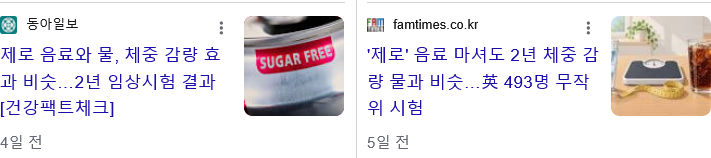

https://bbs.ruliweb.com/best/board/300143/read/76924922

제로콜라 마시면 당이 부족해서 음식을 더먹게 될거라고 했는데
2년간의 추적결과
먹는건 똑같았다 함
https://bbs.ruliweb.com/best/board/300143/read/76924922

제로콜라 마시면 당이 부족해서 음식을 더먹게 될거라고 했는데
2년간의 추적결과
먹는건 똑같았다 함
500 ml 가지고 높은건 아니지않나
제로 500ml이 아니라 다른게 늘었을수도 있고 먹는게 그대론데 살찌는거면 근육량이 줄어서..
일반을 먹든 제로를 먹든 어차피 쳐먹을 놈은 쳐먹음
뇌가 당을 먹었다고 착각한다는건 그럴싸 하던데 연구된게 있던가
걍 뇌피셜이었음 결국 중요한건 인슐린 저항성인듯
당연한거 아닌가? 콜라가 땡겨 그래서 제로 콜라를 마셨어 보통은 여기서 만족하지 제로 콜라를 마셨지만 가짜당이라 진짜 콜라가 여전히 땡기는 사람은 거의 없지 않아?
이정도면 안전한게 맞다 몇년동안 대놓고 제로콜라 저격하는데 뭐 안나오는거보면
단 걸 찾게된다는 식습관 찐빠가 생기긴 함
ㄹㅇ 이게 큼 조심해야함
나도 시발 제로콜라 달고 살다가 자유의지는 구라란걸 깨닫고 제로고 뭐고 단 맛은 최대한 피함
웃긴게...
제로음료 건강에 문제 없다고
주장하는 애들중에
소주는 첨가물 범벅이라
몸에 나쁘다고 우기는 애들이 있다는 거임
소주가 몸에 나쁜건 맞지만
그게 알콜 때문이지
소주에 들어가는 감미료 등 첨가물은
제로음료보다 훨씬 적은데
소주 첨가물이 욕 먹는 건 싸구려 주정 첨가물로 가린다는 식으로 욕 먹지
첨가물 자체가 건강에 안좋다고 욕하는 건 못봤는데
그런 애들이 있었음? 개드립 살면서 한번도 못본거같은뎅
ㄹㅇ 뭔 쉐복인가 싶네 제로음료랑 소주가지고 이야기하는거 본적이 없는데 어디 모든 게시물 다 뒤지면 한명 있는 이야기인가
웃긴건 니 표본 선정 능력이구요 ㅋㅋㅋㅋㅋㅋ
소주는 칼로리부터가..
나 액체중독이라 하루에 음료 2리터 이상 마시는데
1. 물 : 4리터이상? 단기간 마시면 머리 띵해짐
2. 커피 : 하루에 2리터정도 마시면 특유의 체취가 생김(본인에게도 체감됨)
3. 제로콜라 : 제로라 안심하고 겁나 마셨는데 많이 마셨다 싶은날에 혈액순환 안되는거 체감됨 누워있으면 손발저리거나 함
왜 스스로 마루타 함
마셔야는겠고 몸에 갠찮은거찾느라
제로 이온음료 마셔라 그나마 나을 듯
혹시 커피는 믹스커피임? 아니면 카누나 아메리카노 같은거임?
물 4리터는 쉽지 않네
이 댓글 보고 걱정되네 그러지 마라..
제로 너무 맛없어
제로만 먹으면 음식이 더 갈구하겠지 근데 음식이랑 곁들면 포만감은 똑같이 채워지니까
나도 미국에서 다이어트콜라 먹은 뒤로
제로에 빠져서
국내에 제로콜라랑 나랑드 사이다 정도만 있을때부터 제로만 마셔왔는데
성분 따라 많이 먹으면 소화불량이 있거나 두통이 오는 경우가 있음.
거의 공통적으로는 이뇨작용이 있어서
특히 제로콜라는 카페인하고 합쳐져서 줄줄 싸게됨
수분 너무 빠지니까 갈증나서 물을 또 많이 먹게됨
그럼 또 줄줄줄
뭐 지금은 선택지 많아져서 좋음
갈배사이다 제로 맛있더라 펩제랑 병행해서 먹음 꿀맛임
사람한테는 아무 문제 없다는 연구가 나오고 진짜 좋은게 대체당임
근데 사람이 소화를 해서 다른 물질로 바뀌면 생태계 영향이 적거나 없는데 아예 처리를 못하고 그대로 나오는거잖슴(그래서 ㅎㅈ이 달아진다거나)
그래서 똑같이 미생물이나 조개같은 여과섭식생물들이 이거 먹고 나 많이먹음! 하고 가만히 있다가 굶어죽는다는 얘기도 슬슬 나온다는 얘기를 들음
제로 개 맛없어~ 편의점 탄산 죄다 제로라 손이 안감
콜라를 대체하는게 아니라 물을 대체함
그러니까 더 안좋아짐
진짜 제로 삼겹살 언제나오냐
나도 제로콜라 마시면 뭔가가 먹고싶어서 어떤 작용이 있는 줄 알았는데
그냥 평소에 내가 뭘 먹을 때마다 콜라를 같이 먹었어서 습관땜에 그런 거였음
담배 끊고나면 쉬는타임, 집중하던 일 마무리 했을 때 한대 펴야 하는데 뭔가 빠트린 거 같은 기분 드는 것 처럼
어차피 제로음료를 물처럼 마시는 사람들은 이미 탄산을 물처럼 마시다 몸에서 오는 이상징후를 감지한 사람들임.
나는 군 px에서 콜라 맛들인 케이스인데, 일단 존나 싸고 부대가 씨바 깡촌에 있어서 지하수 퍼서 쓴다는데 물맛이..
정수기를 거쳐도 묘한 비린내가 느껴저서 못 먹겠더라고.
암튼 그렇게 콜라 맛들여서 거의 하루 콜라 1L씩 조졌는데,
30대 되니까 몸이 '너 ㅈ되고 싶어?' 신호 주는 것마냥 거품뇨가 생김.
근데 콜라를 끊으니까 걍 기운이 없더라. 그러던 중에 킹시갓임님이 나오셨고, 이전처럼 하루 1L씩 마시는데
거품뇨도 사라지고 뭐 부작용도 못 느낌. 암튼 펩시라임은 신이다.
요즘은 생수1:펩시2로 섞어서 대용량 텀블러에 담아서 마시는데 이러니까 탄산도 적당하고 오히려 좋더라.
뭐 먹으면서 탄산음료까지 먹으면 헛배불러서 더 못먹지않냐
그건 제로가 문제가 아니라 먹는량이 늘어서 그럼